매달 돈 나가는 구독 다섯 개를, 같은 일을 하는 무료 오픈소스 앱으로 바꾸는 방법이에요. 사진 백업(아이클라우드·구글 포토 → Immich), 메모·문서(노션 → AFFiNE), 사진 편집(포토샵 → GIMP), 사진 보정(라이트룸 → darktable), 로고·포스터(일러스트레이터 → Inkscape). 앱마다 받는 곳 → 처음 설정 → 막힐 때 → 꼭 알고 쓰기 순서로 적었어요. 저희가 직접 설치해 본 게 아니라 각 앱 공식 설치 문서와 공식 화면을 기준으로 정리했어요.
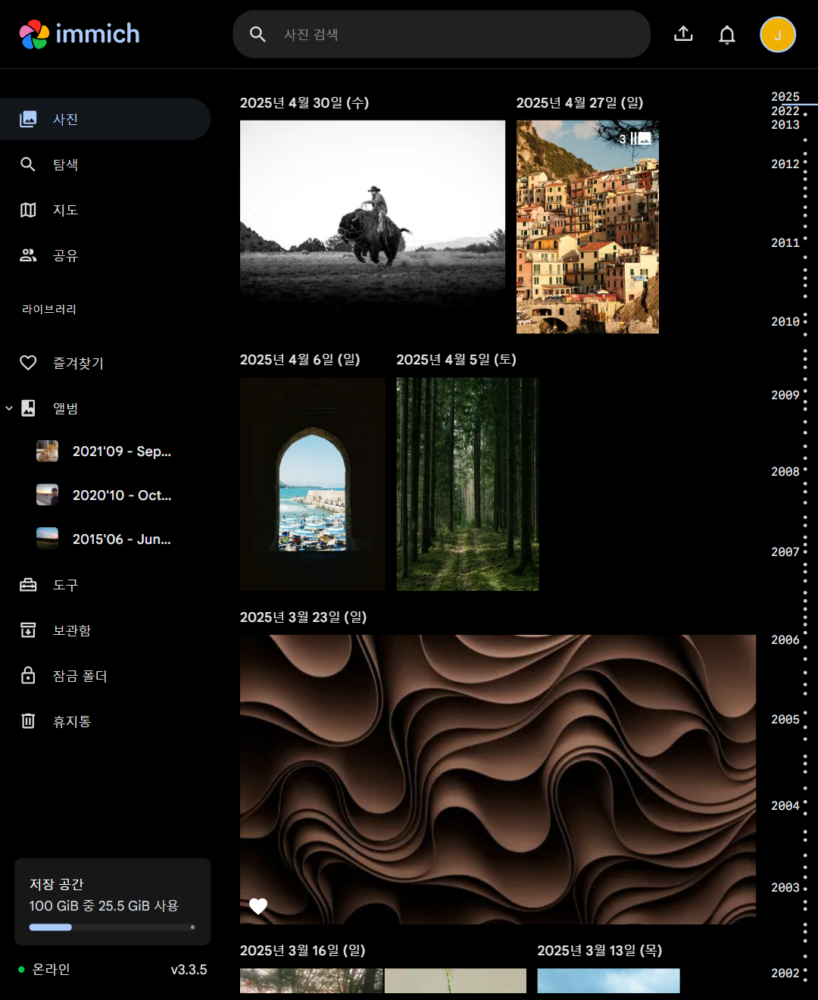
설치 전에 공식 데모에서 어떻게 생겼는지 볼 수 있어요. demo.immich.app에 들어가 공개된 데모 계정(demo@immich.app / demo)으로 들어가면 사진 타임라인·지도·검색을 그대로 눌러 볼 수 있어요. 브라우저 언어가 한국어면 메뉴도 한국어로 나와요.
Immich는 앱 하나 까는 서비스가 아니라, 내 사진을 받아 둘 '서버'를 집에 두는 방식이에요. 도커가 되는 컴퓨터(리눅스 권장, 윈도우는 도커 데스크톱+WSL2)나 NAS에서 아래 '복사해서 쓰기'의 공식 명령으로 설치 파일 두 개를 받고, .env 파일에서 사진 저장 폴더(UPLOAD_LOCATION)와 DB 비밀번호(DB_PASSWORD, 영문·숫자만)를 바꾼 뒤 'docker compose up -d'를 실행해요.
같은 와이파이의 브라우저에서 http://<그 컴퓨터 IP>:2283 을 열고 'Getting Started'를 눌러요. 처음 가입한 사람이 관리자가 되고, 가족 계정은 관리자가 추가해요.
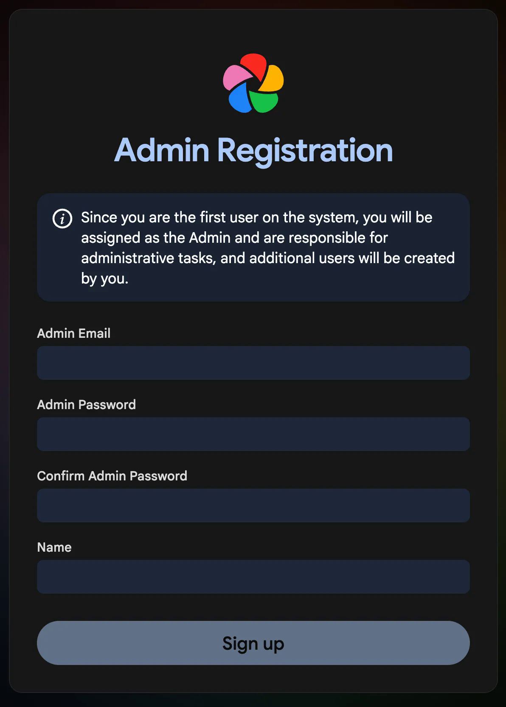
앱스토어·플레이스토어에서 Immich 앱을 받고, 서버 주소 칸에 http://<그 컴퓨터 IP>:2283 을 넣어 로그인해요. 오른쪽 위 구름 아이콘 → 올릴 앨범 고르기 → 맨 아래 '백업 켜기(Enable Backup)'를 누르면 고른 앨범 사진이 올라가요.
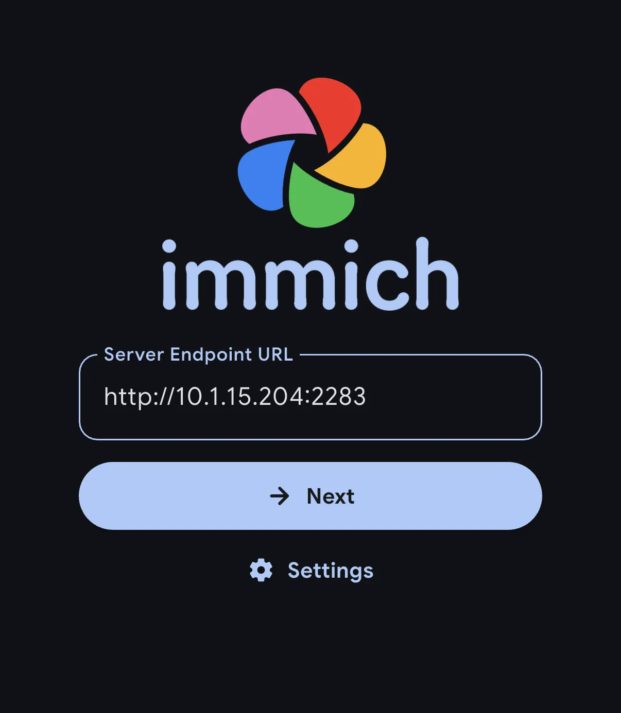
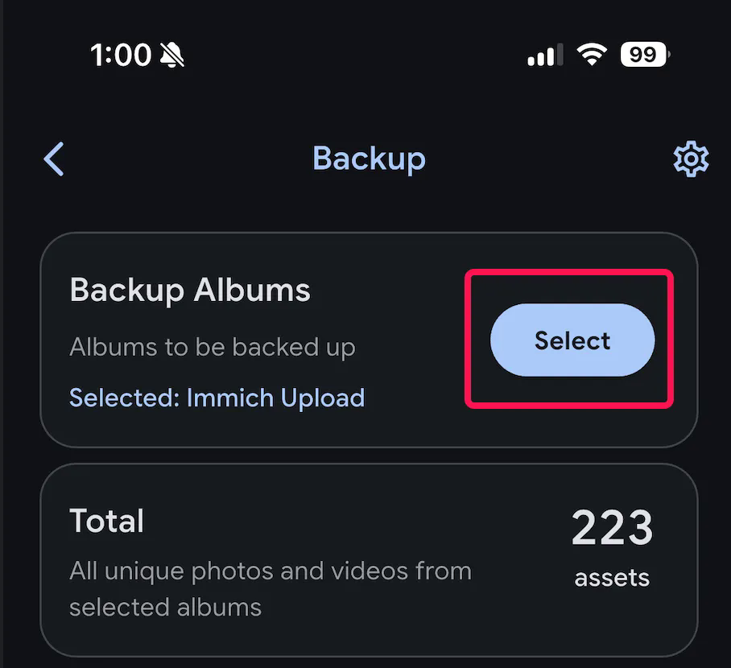
affine.pro/download에서 윈도우·맥·리눅스용 앱을 받거나, 설치 없이 app.affine.pro를 브라우저로 열어요. 가입하지 않아도 '이 브라우저(또는 내 컴퓨터)에 저장'되는 워크스페이스로 바로 쓸 수 있어요. 설정의 표시 언어(Display language)에서 한국어를 고르면 메뉴가 한국어로 바뀌어요.
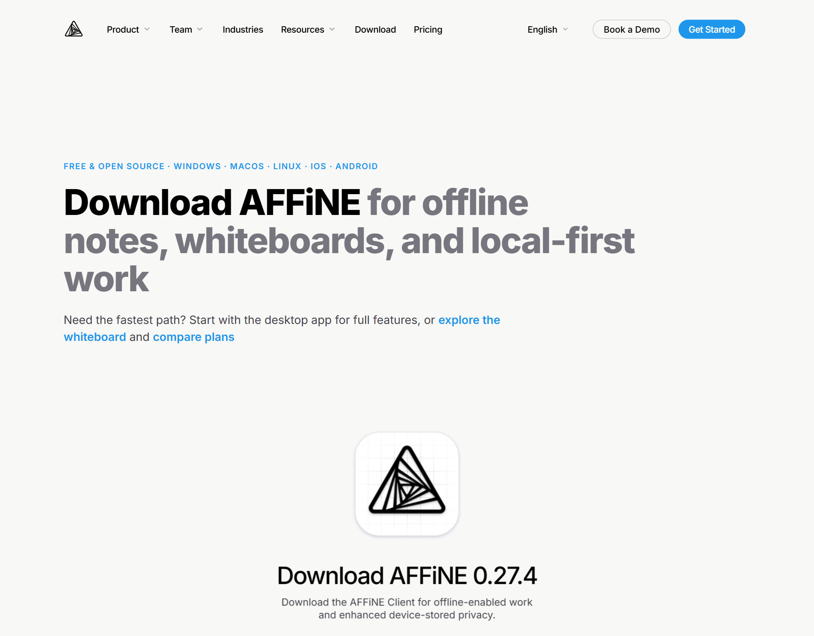
왼쪽 + 로 새 문서를 만들고 제목을 써요. 줄 맨 앞에 [] 를 치고 띄우면 할 일 칸, / 를 치면 표·그림 같은 블록 목록이 떠요.
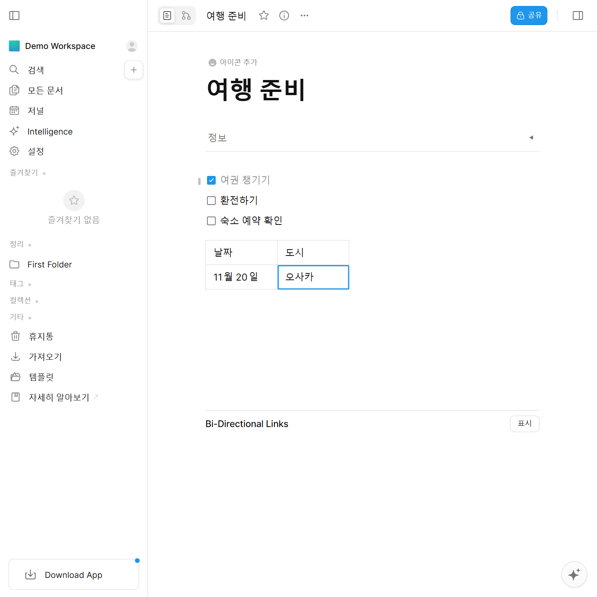
노션에서 내보내기 형식을 'HTML'로, '하위 페이지 포함'을 켜서 받은 파일을 AFFiNE 왼쪽 '가져오기' → 'Notion'으로 넣어요(AFFiNE 공식 안내: 지원 형식은 하위 페이지가 포함된 HTML). 복잡한 데이터베이스는 모양이 달라질 수 있으니 사본으로 먼저 해 보세요.
gimp.org/downloads에서 윈도우용 설치 파일을 받아요(11월 2일 기준 3.2.6). 맥·리눅스판도 같은 페이지에 있어요. 메뉴 언어는 보통 컴퓨터 언어를 따라가요.
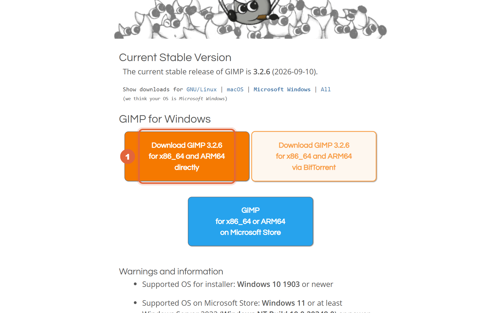
사진을 열면 오른쪽 아래에 레이어 칸이 있어요. 포토샵처럼 레이어를 겹치고, 색과 밝기는 색(Colors) 메뉴의 곡선(Curves)·밝기-대비로 고쳐요. 다 고친 뒤 파일 메뉴의 '내보내기'로 JPG·PNG로 저장해요(그냥 저장은 GIMP 전용 XCF 파일).
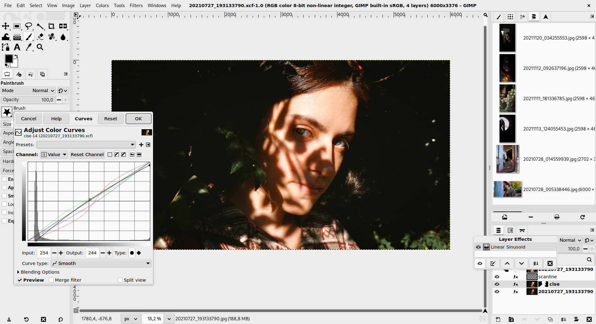
darktable.org/install에서 윈도우는 win64.exe, 맥은 arm64.dmg를 받아요(11월 2일 기준 5.6.2).
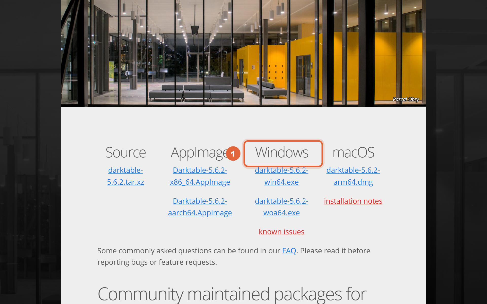
처음 화면(라이트테이블)에서 '가져오기'로 사진 폴더를 넣고, 사진을 두 번 누르면 보정 화면(다크룸)으로 가요. 오른쪽 모듈에서 노출·색을 바꿔도 원본 파일은 그대로 있고, 보정 기록만 따로 저장돼요. 다 되면 라이트테이블의 '내보내기'로 JPG를 만들어요.
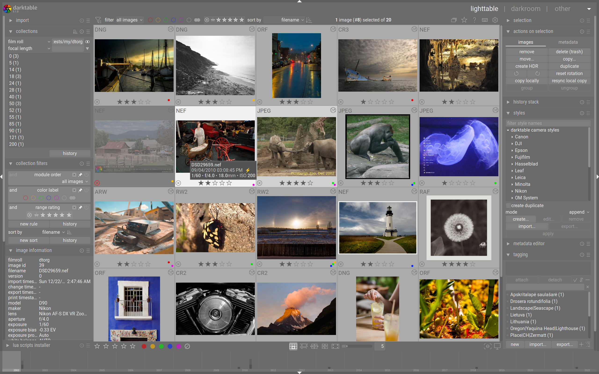
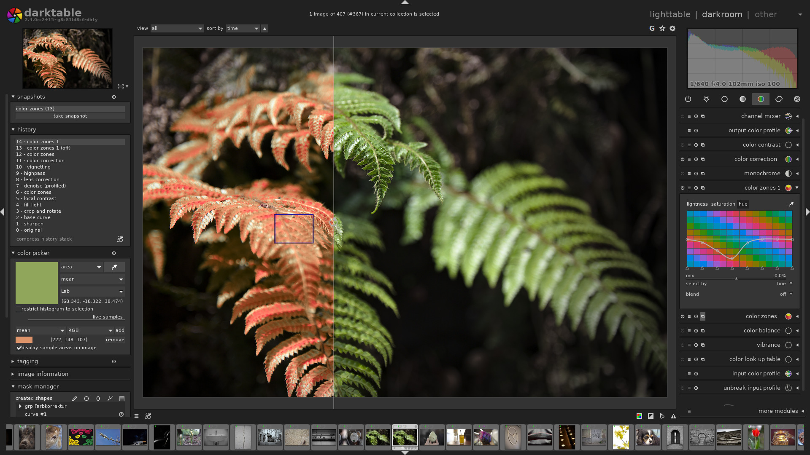
보정한 사진을 고르고 Ctrl+C(보정 기록 복사), 같은 보정을 넣을 사진들을 고르고 Ctrl+V를 누르면 한 번에 들어가요.
inkscape.org/release에서 윈도우·맥·리눅스판을 받아요. 받는 곳 링크는 아래 '복사해서 쓰기'에 있어요.
왼쪽 도구로 도형·글자를 그리고, 채우기·윤곽선(Fill and Stroke) 창에서 색을 바꿔요. 저장은 SVG(크게 키워도 안 깨지는 형식)로 하고, 올릴 그림은 파일 메뉴의 '내보내기'에서 PNG로 만들어요.
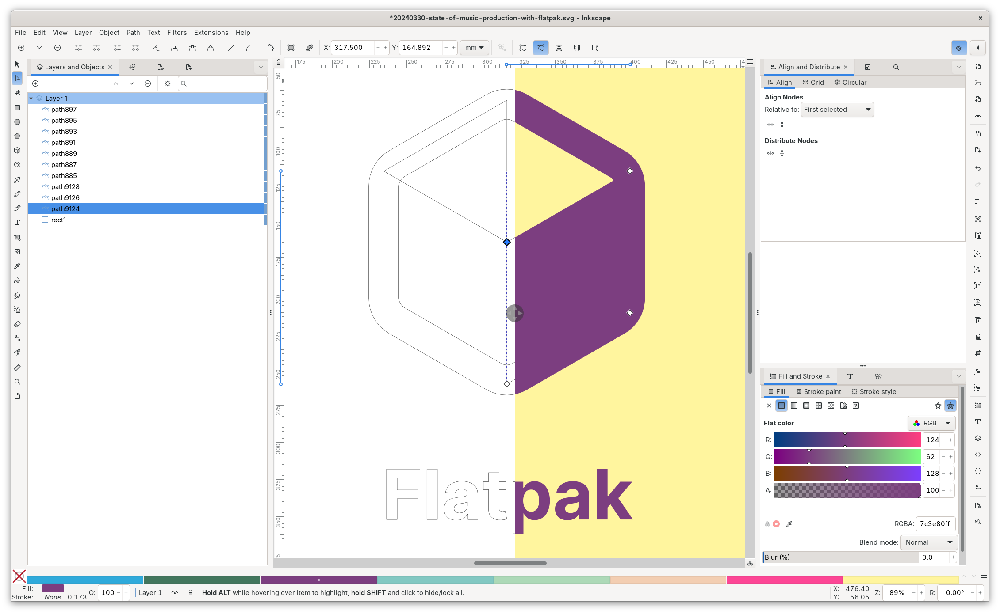
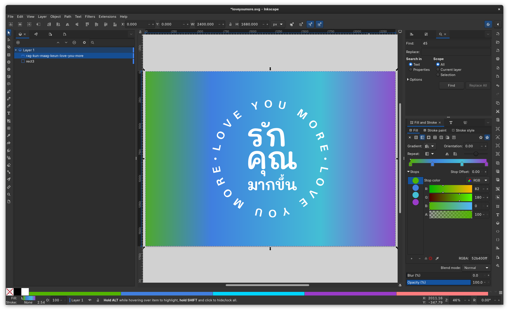
도커가 되는 집 컴퓨터·NAS 터미널에서
mkdir ./immich-app cd ./immich-app wget -O docker-compose.yml https://github.com/immich-app/immich/releases/latest/download/docker-compose.yml wget -O .env https://github.com/immich-app/immich/releases/latest/download/example.env # .env 에서 UPLOAD_LOCATION, DB_PASSWORD 를 바꾼 뒤 docker compose up -d
설치 전에 먼저 보기
https://demo.immich.app
앱 받기 / 브라우저로 바로
https://affine.pro/download https://app.affine.pro
윈도우·맥·리눅스
https://www.gimp.org/downloads/
윈도우·맥·리눅스
https://www.darktable.org/install/
윈도우·맥·리눅스
https://inkscape.org/release/
도움이 되셨다면
@ai.antenna.kr
에서 바로 쓰는 AI 활용법을 계속 올립니다.
화면: Immich 공식 데모·공식 문서 그림(AGPL-3.0) · AFFiNE 공식 웹 앱 · GIMP 3.0 공식 안내 그림(gimp.org) · darktable 공식 스크린샷(darktable.org) · Inkscape 공식 스크린샷(inkscape.org)